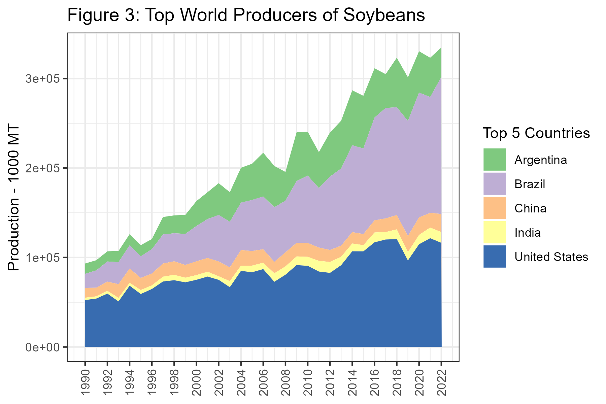
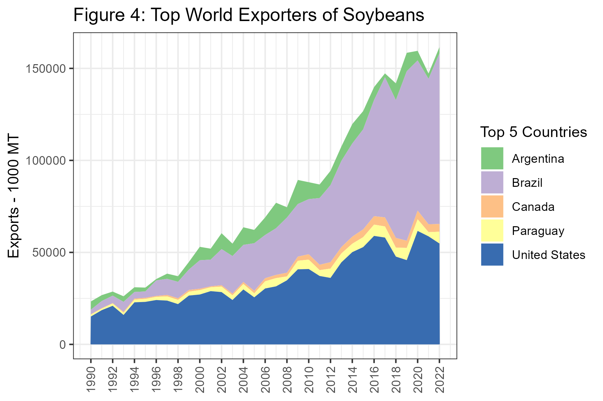
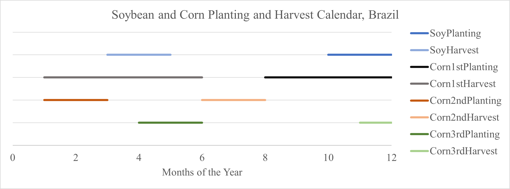
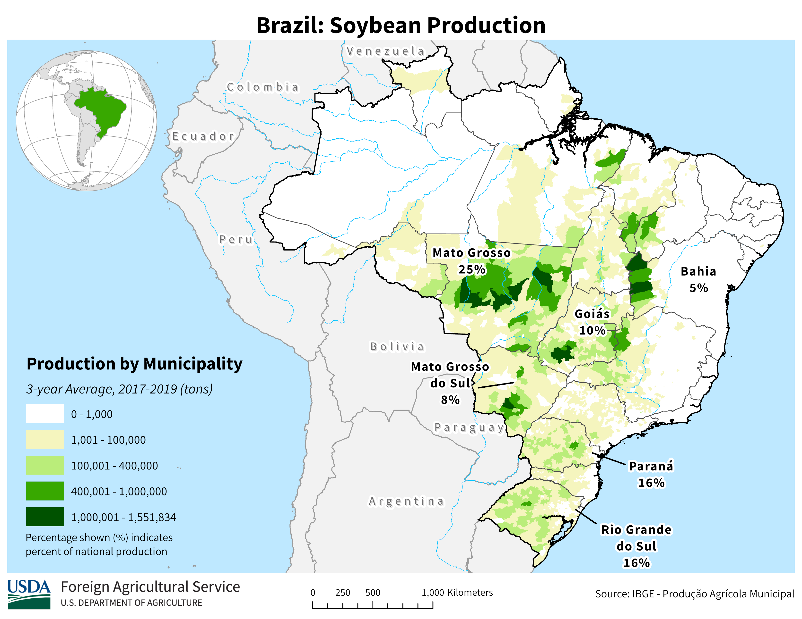

X Country_Name Value
1 1 Brazil 50000
2 2 United States 46992
3 3 Argentina 28000
4 4 Ukraine 23500
5 5 India 4000
6 6 South Africa 3400
7 7 Russia 3300
8 8 Paraguay 3100
9 9 Burma 2450
10 10 European Union 220024 South American Production
Interested in more? Please let me know by taking the survey!
Over1 the last twenty years Brazil and Argentina have grown in prominence on the world stage and are currently among the most important growers of soybeans and corn, particularly so for soybeans.
In figure 1 we have plotted the production since 1990 of the world’s top five producers of corn. Argentina, Brazil, China, the European Union, and the United States round out this group. A clear pattern of increases over time is notable particularly for the U.S., China, and Brazil, generating a dramatic upward trend in the production from this top group.
24.1 Production of Corn
Data for figures 1-4 come from the USDA FAS World Production Supply and Demand historical data-sets for grains and oilseeds.

Figure 2 plots the top five countries by exports. Here we see China and the EU dropping out of the top five with Russia and Ukraine taking their place. While U.S. exports have been mostly flat over this time period, exports from Brazil have been expanding rapidly since about 2004, and exports from Brazil are expected to top exports from the U.S. for the first time in 2022.

Next, in table 1, we present the top producers of corn in 2022.
Table 1: Top 10 World Producers of Corn, 2022 (1000 MT)
24.2 Production of Soybeans
Now we turn our attention to the soybean market. In figure 3 we present production since 1990 from the top five countries. Here, the importance of Brazil and Argentina is much more obvious. While production in the U.S. has a visible upward trend, Brazil and Argentina are really increasing at a rapid rate.

In figure 4 we plot the exports from the top five countries. From figure 3 to 4 China and India drop out and are replaced by Canada and Paraguay. The growth in soybean exports from Brazil is quite remarkable in this chart.

Table 2 shows the top ten producers of soybeans in the World. Here we see that Paraguay and Bolivia are present in the top ten as well.
X Country_Name Value
1 1 Brazil 92700
2 2 United States 54839
3 3 Paraguay 6400
4 4 Canada 4200
5 5 Argentina 3400
6 6 Ukraine 2100
7 7 Uruguay 2000
8 8 Russia 1450
9 9 South Africa 300
10 10 European Union 250Table 2: Top 10 World Producers of Soybeans, 2022
24.3 South American Production Seasons and Trade Flows
Since South America experiences summer when we in the North America experience winter and vice versa, North American and South American production is nicely complementary in providing corn and soybeans for the export market. We noted in Chapter 9 and 10 that U.S. corn and soybean exports are at their highest levels during the 2nd quarter of the marketing year - right after harvest. During this time, the planting and growing seasons are underway in South America, and the heavy export season from harvesting the previous crop is winding down.
Then, South American farmers are harvesting during our planting and growing seasons (March through June). The seasonality is a boon for importers because they have the opportunity to buy for seasonally low harvest-time prices twice per year rather than just once per year.
24.3.1 Brazil
Brazil, being quite close to the equator, enjoys the ability to double crop most every year. Typically, farmers plant soybeans as the first crop because if they plant soybeans first they get a second crop of corn. If they plant corn first, there is not enough time to get a second crop of soybeans. However, yields of first crop corn are higher then yields of second crop corn due to when the rainy season comes, so in some places farmers choose to plant one crop of corn and forego double cropping. Recently, a ‘third’ corn crop has emerged in the North and Northeast regions of the country. This is planted in the Brazilian winter, which is a similar timetable to the U.S. corn crop. The third corn crop is planted in around May and is harvested around October.

Figure 6 show production intensity of soybeans by state, and also provides a calendar of when planting and harvest activity of first crop soybeans are taking place.

Figure 7 shows the same for second crop corn.

While figure 8 shows the regional production intensity of first crop corn. Notice the highest production of first crop corn is located in regions that have no second crop in figure 7. This shows that in the east, where managing a second crop is more difficult, farmers are more apt to plant a single crop of corn.

24.3.2 Where to find information on Brazilian Crops
For information about Brazilian production the National Supply Company (Conab) is the main resource. They publish crop reports monthly, just like the USDA’s WASDE report. Typically, the Brazilian report is released a couple of days before the WASDE report, so if there is information from Brazil that will affect world stocks or production, these reports will move prices in the U.S. As Brazil has grown prominence in soybean and corn markets, analysts cover the CONAB report similar to how the WASDE report is covered, since supply and demand in Brazil affects world markets.
24.3.3 Argentina
Argentina is more similar to the U.S. in latitude, so they are only able to plant a single crop. Planting of corn begins in September and harvest runs from March until May.

Planting of soybeans begins in November and harvest runs from April to May.

24.3.4 Where to find information on Argentinian Crops
The Bolsa de Cereales is the grain exchange in Argentina. They undertake the responsibility of producing crop reports. The reports most closely followed are the Weekly Agricultural Report, which tells the planting or harvest progress, and gives a general update about market conditions. The other report is the Esdtado Y Condition de Cultivos (ECC), which is released once per month. This has more detailed estimates about planting and growing conditions.
With Google Translate to translate web pages reports can be found and understood by English-only speakers.
Many thanks to Felipe Grimaldi Avileis, my teaching assistant for ACE 427 in 2017, for getting me up to speed on the basics of production in South America, and for showing me where to access supply and demand reports for Brazil and Argentina.↩︎